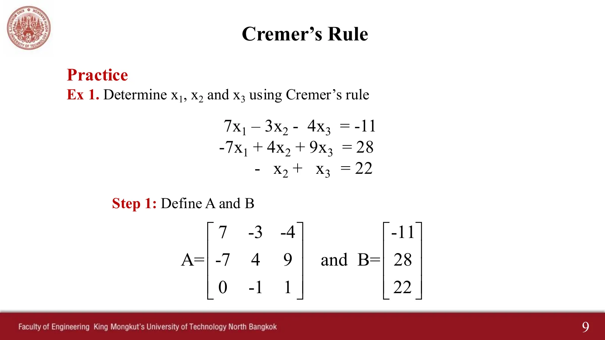
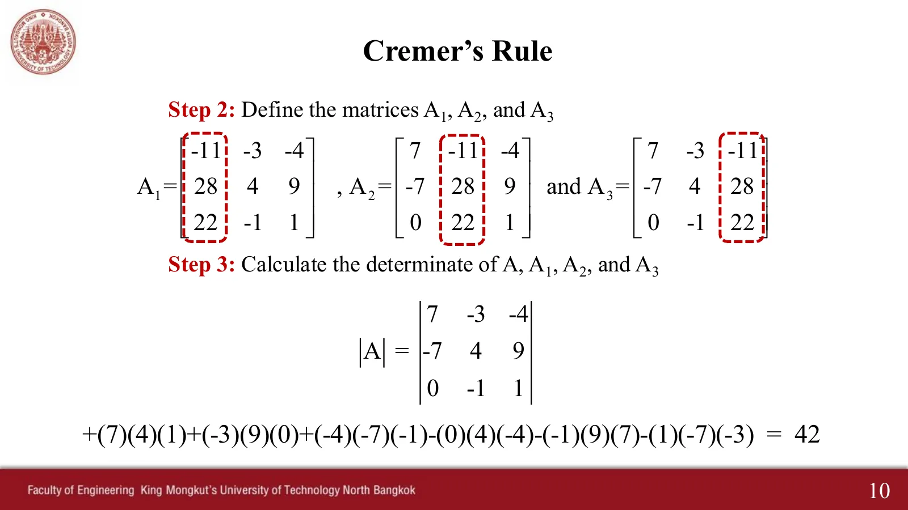
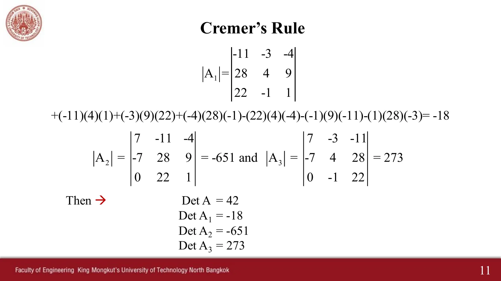

These two slides are Cramer's rule (the slides spell it "Cremer"): write the system as \(AX = B\); then each answer is \(x_i = \Delta_i / \Delta\), where \(\Delta = \det A\) and \(\Delta_i\) is the determinant of the matrix \(A_i\), made by putting \(B\) in place of column \(i\) of \(A\). Elimination on page 1.1 needs a choice at every step; Cramer's rule is a ready-made formula with no choices at all. This page has 6 problems, one after another, each with a solution you open one step at a time with the ▶ button.
ดีเทอร์มิแนนต์ 2×2 และ 3×3 (วิธีของซาร์รัส: เส้นทแยงลงเป็นบวก เส้นทแยงขึ้นเป็นลบ)2×2 and 3×3 determinants (Sarrus' rule: down diagonals plus, up diagonals minus)
$$ x_i = \frac{\Delta_i}{\Delta},\qquad \begin{vmatrix} a & b \\ c & d \end{vmatrix} = ad - bc,\qquad
\begin{vmatrix} a_{11} & a_{12} & a_{13} \\ a_{21} & a_{22} & a_{23} \\ a_{31} & a_{32} & a_{33} \end{vmatrix} = \underbrace{a_{11}a_{22}a_{33} + a_{12}a_{23}a_{31} + a_{13}a_{21}a_{32}}_{\text{↘}} - \underbrace{\left(a_{31}a_{22}a_{13} + a_{32}a_{23}a_{11} + a_{33}a_{21}a_{12}\right)}_{\text{↗}} $$
The same circuit as page 1.1, problem 1 (V₁ = 12 V, V₂ = 10 V, R₁ = 3 Ω, R₂ = 4 Ω, R₃ = 2 Ω)
ดีเทอร์มิแนนต์ 2×2 คือ ผลคูณเส้นทแยงลง ลบ ผลคูณเส้นทแยงขึ้น วงจรเดิมต้องได้คำตอบเดิม \(I_1 = 2\) A และ \(I_2 = -1\) A
A 2×2 determinant is the down-diagonal product minus the up-diagonal product. The same circuit must give the same answer, \(I_1 = 2\) A and \(I_2 = -1\) A.
โจทย์: หา I₁ และ I₂ จากสมการของวงจร
Problem: find I₁ and I₂ from the circuit's equations
In each determinant step the diagonals light up one at a time with their products, in the same order as the line +(7)(4)(1)+(−3)(9)(0)+… on slide p. 10. Press ⟲ to see it again.
ดูสไลด์เฉลยต้นฉบับของผู้สอน (หน้า 9–12)See the teacher's original worked slides (pp. 9–12)

p. 9

p. 10

p. 11 (พิมพ์ Det A₁ = −18 ผิด ที่ถูกคือ −189)p. 11 (prints Det A₁ = −18; it should be −189)
Three windows give three equations in three unknowns \(I_1, I_2, I_3\). The current stays still until all three are found. Raise \(V_2\) and note that only column \(B\) changes: \(\Delta\) stays the same.
โจทย์: หา I₁, I₂, I₃
Problem: find I₁, I₂, I₃
5
เมื่อ Δ = 0: ระบบ 2×2 คือเส้นตรงสองเส้น
When Δ = 0: a 2×2 system is two straight lines
ตัวอย่างประกอบ · สไลด์หน้า 7 บอกว่า A ต้องมีดีเทอร์มิแนนต์ไม่เป็นศูนย์ ข้อนี้แสดงว่าทำไม
An example · slide p. 7 says A must have a nonzero determinant; this problem shows why
Each equation of a 2×2 system is a straight line on the \(x\)–\(y\) plane, and the answer is where the two lines cross. Move \(k\) to 4: the lines become parallel (\(\Delta = 0\)) and never cross. Move \(c\) to 8 as well and the lines lie on top of each other, with infinitely many common points.
Problem 2 must give \(\Delta = 42\), \(\Delta_1 = -189\), \(\Delta_2 = -651\), \(\Delta_3 = 273\) and \(x_1 = -4.5\), \(x_2 = -15.5\), \(x_3 = 6.5\).
Note the order of the six products: it matches the line +(7)(4)(1)+(−3)(9)(0)+… on slide p. 10 term for term.
Problem 3 (homework): work it by hand first, then open the steps to check.
Try this 2 — when Δ = 0
Problem 5: when \(\Delta = 0\), Cramer's rule stops at once, because you cannot divide by zero. On the graph the lines are parallel or on top of each other.
Problem 6: make one row twice another and see that \(\Delta\) is zero every time.
For a circuit of positive resistances, \(\Delta\) is never zero (move the sliders in problem 4), so a real circuit always has exactly one answer.
Try this 3 — watch out
Sarrus' rule (copy the first two columns to the right) works for 3×3 only. A 4×4 needs cofactor expansion or elimination instead.
Problem 4: raise \(V_2\) and see that only \(\Delta_1, \Delta_2, \Delta_3\) must be recomputed.
Question: if you change \(R_4\), which determinants change, and why does changing \(R_4\) affect \(I_3\) even though \(R_4\) is not in the third window?
Source: chapter 1 slides, pp. 7–12 and homework problem 1, p. 21 (the slide pictures are on this page)